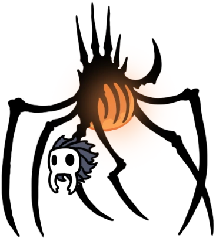

Bienvenido/a pequeño caballero, a este sitio informativo para aprender a derrotar a cada Jefe de de Hallownest, ahora embarcate en las profundidades para encontrar a cada uno de estos jefes
"Somnoliento dios de la fertilidad"

"Despiadado dios de los territorios"

"Dios solitario del nido"

"Dios furioso de los oprimidos"

"Dios protector de una tierra que se desvanece"

"Dios protector de una tierra que se desvanece"

"Incansable dios de los que trabajan juntos"

"Seductor dios de la maternidad"

"Nobles hermanas diosas del combate"

"Dioses venerados de una orgullosa tribu"

"Amantes dioses de la fe y la devocion"

"Dios vigilante del deber"

"Cáscara rota de un dios vacio"

"Dios perdido del abismo"

"Siempre cambiante dios de los sin rostro"
"Dios engañoso tomando la forma de un protector"

"Dios alegre de la proteccion"

"Galante dios de la arena"

"Brillante dios de la avaricia"

"Brilante dios de la avaricia"

"Extraño dios del conocimiento"

"Traicionero dios de la ira"

"Dios falso conjurado por los solitarios"

"Atormentado dios del santuario"

"Codicioso dios del alma"

"Frenetico dios de la mortalidad"

"Bondadoso dios de la valentía y el honor"

"Bondadoso dios de la valentía y el honor"

"Dioses centinelas de la torre"

"Dios onirico del miedo y el alivio"

"Dios onirico de los jardines"
"Dios onirico de los corazones heroicos"

"Dios onirico de la meditacion y la soledad"

"Dios onírico de la fe y la traición"
"Dios onirico del mas alla"
"Dios onirico de los sabios y los viajeros"

"Leales dioses hermanos del aguijon"

"Talentoso dios de artistas y creadores"

"Dios astuto de la oportunidad"

"Poderoso dios de la nada"

"Es un honor, Buscador, atender a tu llamado"

"Dios de las pesadillas"

"Dios olvidado de la luz"